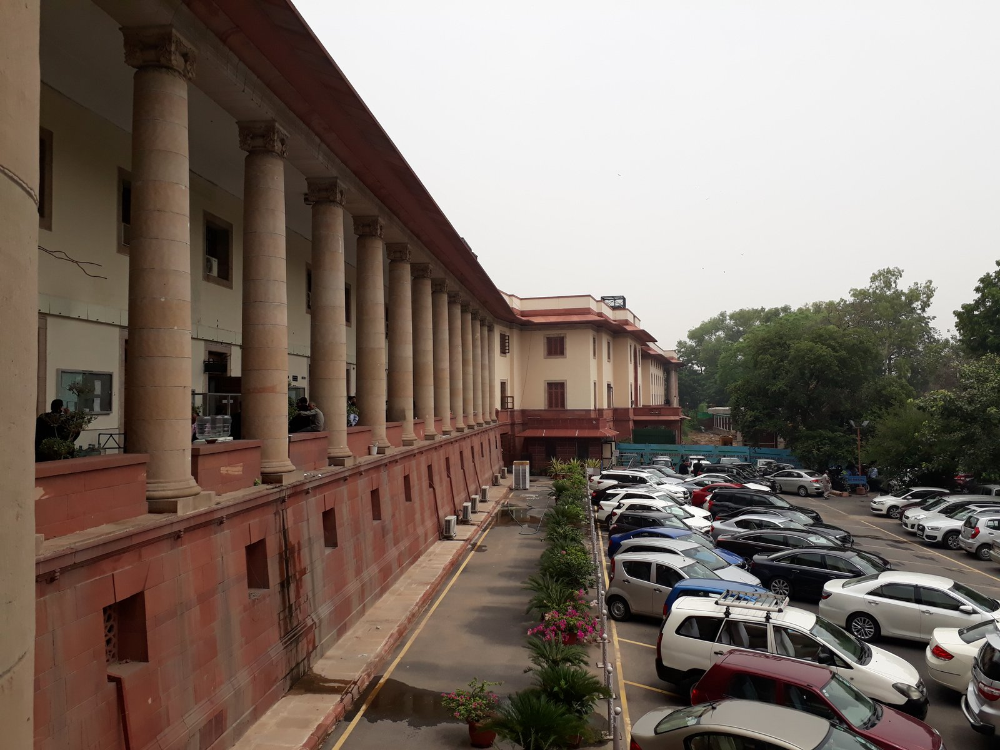

The Supreme Court of India, High Courts & Judicial Review
An exhaustive, high-yield guide to the Indian Judiciary: Supreme Court structure (Articles 124–147), Collegium evolution, Original & Advisory Jurisdictions, Court of Record, Judicial Review & Basic Structure, the 25 High Courts, and Lok Adalats for UPSC, APSC & State PSCs.
1. The Supreme Court of India: Establishment, Strength & Appointment
Articles 124 to 147 in Part V • Apex guardian of the Constitution and Fundamental Rights

Supreme Court of India (Inaugurated January 28, 1950)
At the apex of India's single integrated judiciary, comprising the Chief Justice of India and 33 other judges (Total 34), appointed via the Supreme Court Collegium system.
Strength & Seat (Art 124 & 130)
Inaugurated on Jan 28, 1950. Originally 1 CJI + 7 judges (Total 8). Parliament increased strength successively to 34 Judges (1 CJI + 33 Judges) via the 2019 Act. Seat is New Delhi; CJI can appoint other places with President's approval.
Qualifications & Tenure
Citizen of India, AND:
• Judge of a High Court for 5 years; OR
• Advocate of High Court for 10 years; OR
• Distinguished Jurist in President's opinion.
No minimum age limit! Retires at 65 years.
The Collegium System
Evolved through Three Judges Cases (1981, 1993, 1998). CJI recommends appointments along with a collegium of 4 senior-most SC judges. In 2015 (4th Judges Case), SC struck down the 99th Amendment and NJAC as unconstitutional violation of judicial independence.
Removal / Impeachment
By President after address by Parliament under Judges (Inquiry) Act 1968. Grounds: "Proved misbehaviour" or "Incapacity". Requires majority of total membership + not less than 2/3rd of members present and voting in each House. No SC judge has been successfully removed till date.
2. Jurisdictions of the Supreme Court of India
Original, Writ, Appellate, Advisory, Review, and Contempt of Court powers
| Jurisdiction Type | Constitutional Article | Scope & Nature of Cases Covered | Key Exceptions / Prelims Traps |
|---|---|---|---|
| Original Jurisdiction | Article 131 | Exclusive jurisdiction in federal disputes: Centre vs State(s), Centre + State(s) vs other State(s), State vs State. | Excludes pre-constitution treaties, private citizen suits, and inter-state river water disputes (Art 262). |
| Writ Jurisdiction | Article 32 | Enforcement of Fundamental Rights via Habeas Corpus, Mandamus, Prohibition, Certiorari, and Quo-Warranto. | Restricted ONLY to Fundamental Rights (High Court under Art 226 has wider reach). |
| Appellate Jurisdiction | Articles 132, 133, 134 | Constitutional, Civil, and Criminal appeals against High Court judgments with certificate of fitness. | In criminal cases, appeal lies as of right if HC reverses acquittal to death penalty. |
| Special Leave Petition (SLP) | Article 136 | Plenary discretionary power to grant special leave to appeal against ANY judgment, decree, sentence or order of ANY court or tribunal. | Does NOT apply to Military Courts / Armed Forces Court Martial. |
| Advisory Jurisdiction | Article 143 | President may seek SC's opinion on: 1) Question of law/fact of public importance; 2) Pre-constitution treaties/agreements. | SC can refuse opinion on category 1 (e.g. Ayodhya 1993); opinion is purely advisory and NOT binding on President. |
| Court of Record & Contempt | Article 129 | Its records have evidentiary value and cannot be questioned; power to punish for contempt of itself (Civil: wilful disobedience; Criminal: scandalising court). | Inherent power independent of statute. |
| Public Interest Litigation (PIL) | Epistolary (Arts 32/226) | Relaxation of strict rules of locus standi to enable public-spirited citizens to seek judicial redress on behalf of poor and marginalized groups. | Pioneered by Justice P.N. Bhagwati and Justice V.R. Krishna Iyer (late 1970s). |
3. The High Courts of India (Articles 214–231)
25 High Courts • Highest judicial authority at the State level
Art 226 vs Art 32 Comparison
While SC's writ power (Art 32) is restricted exclusively to Fundamental Rights, the High Court under Article 226 can issue writs not only for Fundamental Rights but also "for any other purpose" (ordinary legal rights). Therefore, HC's writ jurisdiction is broader in scope than SC.
Supervisory Jurisdiction
Every High Court has superintendence over all courts and tribunals throughout the territories in relation to which it exercises jurisdiction. It can call for returns, make general rules, and prescribe forms. Excludes Armed Forces tribunals.
HC Judge Qualifications & Age
Citizen of India, AND: held judicial office in India for 10 years; OR advocate of a High Court for 10 years. Retires at 62 years (15th Amend 1963). Note: 'Distinguished Jurist' category DOES NOT apply to High Court appointments!
Common High Courts Having Jurisdiction Over Multiple States / UTs
Article 231 (7th Amendment Act 1956)| High Court | Principal Seat & Benches | Territorial Jurisdiction (States & UTs) |
|---|---|---|
| Guwahati High Court | Guwahati (Benches: Kohima, Aizawl, Itanagar) | Assam, Nagaland, Mizoram, and Arunachal Pradesh |
| Bombay High Court | Mumbai (Benches: Nagpur, Panaji, Chhatrapati Sambhajinagar) | Maharashtra, Goa, Dadra & Nagar Haveli and Daman & Diu |
| Calcutta High Court | Kolkata (Circuit Bench: Port Blair, Jalpaiguri) | West Bengal and Andaman & Nicobar Islands |
| Kerala High Court | Kochi | Kerala and Lakshadweep |
| Madras High Court | Chennai (Bench: Madurai) | Tamil Nadu and Puducherry |
| Punjab & Haryana High Court | Chandigarh | Punjab, Haryana, and UT of Chandigarh |
| Jammu & Kashmir and Ladakh High Court | Srinagar and Jammu | UT of Jammu & Kashmir and UT of Ladakh |
4. Subordinate Courts, Lok Adalats & Gram Nyayalayas
Articles 233–237, NALSA Act 1987, and grassroots dispute resolution mechanisms
District Judge (Art 233)
The highest judicial authority in the district. Designated as District Judge when dealing with civil cases and Sessions Judge when trying criminal matters. Has power to award any sentence including death sentence, but capital punishment MUST be confirmed by the High Court before execution.
Lok Adalats (NALSA Act 1987)
Statutory forum for amicable, speedy settlement. Presided over by a sitting or retired judicial officer with a lawyer and social worker. No court fees. An award made by Lok Adalat is deemed to be a civil court decree, is final, binding, and non-appealable in any court.
Gram Nyayalayas (Act 2008)
Enacted under Article 39A to provide speedy access to justice at the grassroots level for rural citizens. Established for every intermediate Panchayat. Presided over by a Nyayadhikari (First Class Judicial Magistrate). Operates as a mobile court and is guided by principles of natural justice.
Active Recall Flashcards (3D Flip)
Click any card to flip between Question and Prelims Answer
Prelims Self-Assessment Quiz
Test your command over Supreme Court jurisdictions, High Court powers, and Collegium rulings